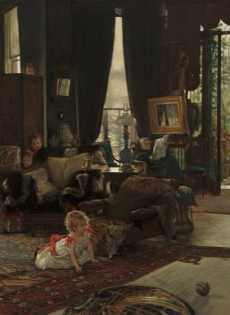

Home / Deep Past and First Games / Shared across the world
Encyclopedia ID 475
Hide and Seek
Nascondino, Petak umpet, Kakurenbo, Escondidas · Nascondino / Petak Umpet / Kakurenbo


One seeker counts while others hide; the seeker searches and the first found is next seeker.
Heritage note
A tradition shared by communities in many places.
Origins
Usually placed in the era of Deep Past and First Games (before about 3000 BCE), although its exact origins are uncertain.
Sources
Related entries
Ziziros
Cyprus · Street and playground gamesFijian tag
Fiji · Street and playground gamesGalah panjang
Malaysia +1 · Street and playground gamesBaibalaa
Maldives · Street and playground gamesTag
Myanmar · Street and playground gamesPatintero
Philippines · Street and playground games